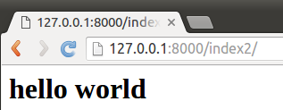
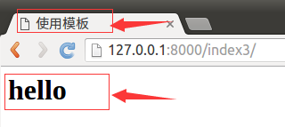

HttpResponse对象
视图在接收请求并处理后，必须返回HttpResponse对象或子对象。在django.http模块中定义了HttpResponse对象的API。HttpRequest对象由Django创建，HttpResponse对象由开发人员创建。
运行服务器，在浏览器中浏览首页，可以在浏览器“开发者工具”中看到响应信息如下图：
标号3为响应头信息，点击标号4处可以查看响应体信息。

属性
- content：表示返回的内容。
- charset：表示response采用的编码字符集，默认为utf-8。
- status_code：返回的HTTP响应状态码。
- content-type：指定返回数据的的MIME类型，默认为'text/html'。
方法
- _init_：创建HttpResponse对象后完成返回内容的初始化。
- set_cookie：设置Cookie信息。
set_cookie(key, value='', max_age=None, expires=None) - cookie是网站以键值对格式存储在浏览器中的一段纯文本信息，用于实现用户跟踪。
- max_age是一个整数，表示在指定秒数后过期。
- expires是一个datetime或timedelta对象，会话将在这个指定的日期/时间过期。
- max_age与expires二选一。
- 如果不指定过期时间，在关闭浏览器时cookie会过期。
- delete_cookie(key)：删除指定的key的Cookie，如果key不存在则什么也不发生。
- write：向响应体中写数据。
示例
直接返回数据
1）打开booktest/views.py文件，定义视图index2如下：
def index2(request):
str='<h1>hello world</h1>'
return HttpResponse(str)
2）打开booktest/urls.py文件，配置url。
url(r'^index2/$',views.index2),
3）运行服务器，在浏览器中打开如下网址。
http://127.0.0.1:8000/index2/
运行效果如下图：

如果使用这种方式构造一个漂亮丰富的页面，对于开发人员真是会发疯，于是就有了下面的方式：
调用模板
可以将html、css、js定义到一个html文件中，然后由视图来调用。
1）打开booktest/views.py文件，定义视图index3如下：
from django.template import RequestContext, loader
...
def index3(request):
#加载模板
t1=loader.get_template('booktest/index3.html')
#构造上下文
context=RequestContext(request,{'h1':'hello'})
#使用上下文渲染模板，生成字符串后返回响应对象
return HttpResponse(t1.render(context))
2）打开booktest/urls.py文件，配置url。
url(r'^index3/$',views.index3),
3）在templates/booktest/目录下创建index3.html，代码如下：
<html>
<head>
<title>使用模板</title>
</head>
<body>
<h1>{{h1}}</h1>
</body>
</html>
4）运行服务器，在浏览器中打开如下网址。
http://127.0.0.1:8000/index3/
运行效果如下图：

调用模板简写函数render
每次调用模板时都要执行加载、上下文、渲染三个步骤，为了简化操作，Django定义了render()函数封装了以上三个步骤的代码，定义在django.shortcuts模块中。
1）打开booktest/views.py文件，定义视图index3如下：
from django.shortcuts import render
...
def index3(request):
return render(request, 'booktest/index3.html', {'h1': 'hello'})
是不是用render()函数调用模板比上面简单多了？